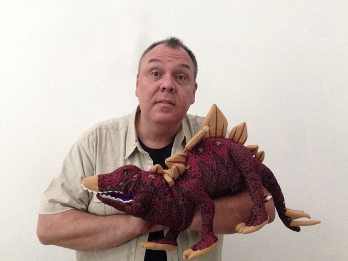

Dinosaur Magic Show
JURASSIC MAGIC!
 Welcome to the world of the Dinosaurs! Years ago when I first became a full time performer, I created a show about dinosaurs that was very popular. Then about 10 years ago I retired the show and never expected to bring it out again. During the Summer of 2015, I brought back my dinosaur show and renamed it Jurassic Magic. It was basically an updated version of the old show with some new puppets and new magic. I presented this show almost daily during summer (2015) and the kids went crazy for the show! And now for February 2025, it’s back again and better than ever!!!
Welcome to the world of the Dinosaurs! Years ago when I first became a full time performer, I created a show about dinosaurs that was very popular. Then about 10 years ago I retired the show and never expected to bring it out again. During the Summer of 2015, I brought back my dinosaur show and renamed it Jurassic Magic. It was basically an updated version of the old show with some new puppets and new magic. I presented this show almost daily during summer (2015) and the kids went crazy for the show! And now for February 2025, it’s back again and better than ever!!!
In the video below on the left you’ll see my brand new baby dinosaur puppet. I’ve also got some new magic to include in the show, along with some of the favorite routines from last year.
The show is 45 minutes of magic, puppets, and silliness all with an emphasis on dinosaurs. It’s not a 

Because this is a show for preschoolers I keep the education fairly simple. I talk about the differences between the herbivores and carnivores. I share some details of the different dinosaur puppets, like what the words Stegasaurus and Triceratops actually mean.
CALL NOW TO SCHEDULE!!! Dean Alan - 703-404-8902
AND If you already have the info you need and are ready to book, you can contact us via phone, email, or by clicking book a show!
IF you click the image below/left you can print out a copy of the show POSTER, and if you click below right you can print out a copy of the show FLYER.